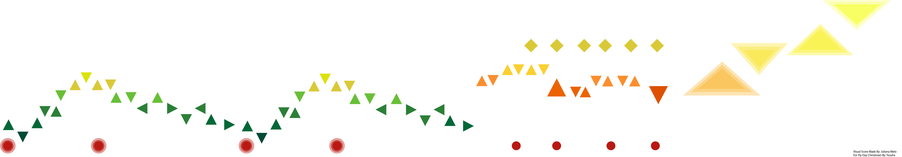
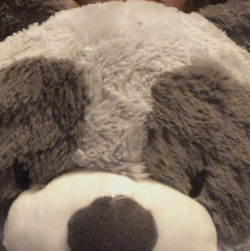

Home
Welcome! My name is Juliana Melo and this is my portfolio website. I do graphic design, UX design, fashion, photography, etc. Check out my gallery if you want to see my work.
I am always willing to take on a new challenge and create something to exceed expectations.
About Me
An interactive design student in the Greater Boston Area currently studying at Lesley University in Cambridge, MA.
Deep passion for print, digital design, fashion, and film, but always willing to explore new fields and apply creativity to a new medium.
A quick learner who is always excited to start a new project in order to create something new, while effectively communicating. A team player who builds off of others ideas and
always helps push their own and others concepts. Strives to be a leader, inspirer, and learner. While has knowledge, is always open to learning new methods and information.
Aims to grow as a designer and become the designer they achieve to be.
My experience falls into the Adobe Suite,
but I have dabbled in:
- Music
- Fashion
- Film Production
- etc.
Some of my past projects are:
- Logo creation for Third World Manga
- Go Out Doors - Medford, MA
- Center for Citizenship and Social Responsibility - Medford, MA
- Murals at Medford High School
Why Smokey?
 The name "Smokey" comes from one of the names of my stuffed animals (which is a raccoon).
This name holds meaning to me and I have created a lot of work revolving around this stuffed animal.
When it came to my brand name, I could not think of a more perfect name to describe my art style: nostalgic, meaningful, and innovative.